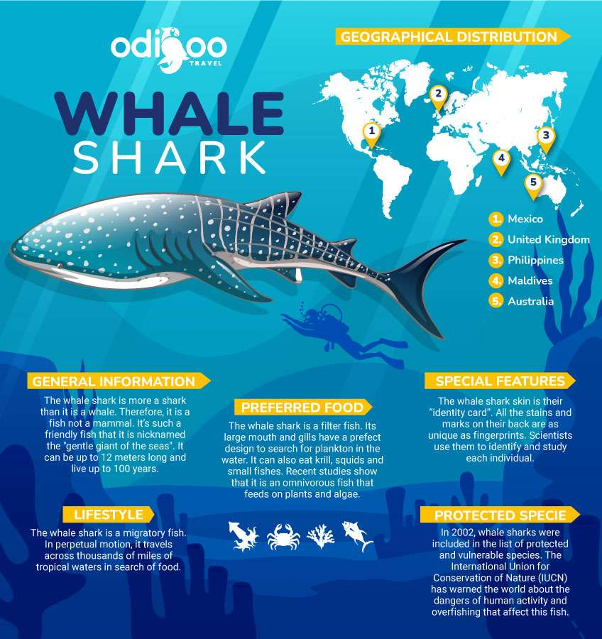
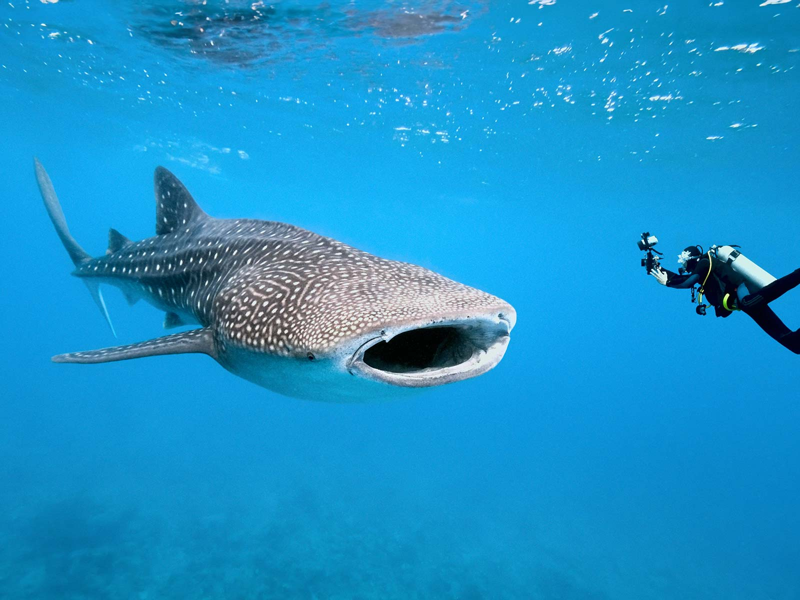

 Whale sharks possess a broad, flattened head with a large mouth and two small eyes located at the front corners. Unlike many other sharks, whale shark mouths are located at the front of the head rather than on the underside of the head. A 12.1 m (39.7 ft) whale shark was reported to have a mouth 1.55 m (5.1 ft) across. Whale shark mouths can contain over 300 rows of tiny teeth and 20 filter pads which it uses to filter feed. The spiracles are located just behind the eyes. Whale sharks have five large pairs of gills. Their skin is dark grey with a white belly marked with an arrangement of pale grey or white spots and stripes that is unique to each individual. The skin can be up to 15 cm (5.9 in) thick and is very hard and rough to the touch. The whale shark has three prominent ridges along its sides, which start above and behind the head and end at the caudal peduncle. The shark has two dorsal fins set relatively far back on the body, a pair of pectoral fins, a pair of pelvic fins and a single medial anal fin. The caudal fin has a larger upper lobe than the lower lobe (heterocercal).
Whale sharks have been found to possess dermal denticles on the surface of their eyeballs that are structured differently from their body denticles. The dermal denticles, as well as the whale shark's ability to retract its eyes deep into their sockets, serve to protect the eyes from damage
Evidence suggests that whale sharks can recover from major injuries and may be able to regenerate small sections of their fins. Their spot markings have also been shown to reform over a previously wounded area.
The whale shark is the largest non-cetacean animal in the world. Evidence suggests that whale sharks exhibit sexual dimorphism with regards to size, with females growing larger than males. A 2020 study looked at the growth of whale shark individuals over a 10-year period. It concluded that males on average reach 8 to 9 meters (26 to 30 ft) in length. The same study predicted females to reach a length of around 14.5 m (48 ft) on average, based on more limited data. However, these are averages and do not represent the maximum possible sizes.